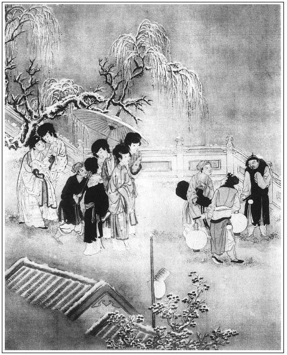

張回此回自吳神仙後又是一番結果也。二十九回以上雖講財，卻單講色，四十六回以上至三十回以下，雖亦講色，卻單講財。故王六兒財中之色也。
上半部凡言六月內事，接連兩個人都在六月，如玉樓以六月娶，瓶兒亦以六月密切，應分明處卻不分明的妙。此處言正月內事，接連自初九日寫至十六日，一日有一日的事，卻令人捱著，不覺其板重，不必分明處卻甚分明。
玳安、小玉是一部結果，承繼西門員外達之人也。此處以卜龜結束眾人，卻先點小玉、玳安之私，並以眾丫鬟襯春梅之氣骨。總是此回，乃結上起下之文也。要皮襖，乃月娘、金蓮終離之由，卻已於此處安根。必用皮襖，蓋欲於後文回顧既死之瓶兒，又掩映方張之如意，總收入月娘、金蓮文中。再從王六兒處插入申二姐，挽合春梅，總欲於此番一鬧，將眾人都合攏來，死者生者一齊開交，特與翡翠軒四人一合寫作映，而已於此處安根。針錢之妙，乃在一皮襖，與金扇明珠一樣章法也。
卜龜兒，止月娘、玉樓、瓶兒三人，而金蓮之結果，卻用自己說出，明明是其後事，一毫不差。而看者止見其閒話，又照管上文神仙之相，合成一片。至於春梅，乃用迎春等三人同時一襯。其獨出之致，前程若龜鑒，文字變動之法如此。否則，一齊卜龜，不與神仙之相重複刺眼乎？
妙在吳神仙是相士之話，移此處不得。此處卜龜是賣卜、老嫗之話，移彼處不得。
此處篇首，偏又找一煙火，文字周匝之甚．
請四丫鬟不用王六兒，卻用賁四嫂，百忙裡又為賁四嫂安線也。
詞曰：
小市東門欲雪天，眾中依約見神仙。蕊黃香細貼金蟬。張旁此回總是伏線文字。
飲散黃昏人草草，醉容無語立門前。馬嘶塵哄一街煙。
──右調《浪淘沙》

話說西門慶那日，打發吳月娘眾人往吳大妗子家吃酒去了。張夾先安一句在此。李智、黃四約坐到黃昏時分，就告辭起身。伯爵趕送出去，如此這般告訴：「我已替二公說了，准在明日還找五百兩銀子。」那李智、黃四向伯爵打了恭又打恭，去了。伯爵復到廂房中，和謝希大陪西門慶飲酒，只見李銘掀簾子進來。伯爵看見，便道：「李日新來了。」李銘扒在地下磕頭。西門慶問道：「吳惠怎的不來？」李銘道：「吳惠今日東平府官身也沒去，在家裡害眼。小的叫了王柱來了。」便叫王柱：「進來，與爹磕頭。」那王柱掀簾進入房裡，朝上磕了頭，與李銘站立在旁。伯爵道：「你家桂姐剛才家去了，你不知道？」李銘道：「小的官身到家，洗了洗臉就來了，並不知道。」伯爵向西門慶說：「他兩個怕不的還沒吃飯哩，哥吩咐拿飯與他兩個吃。」書僮在旁說：「二爹，叫他等一等，亦發和吹打的一答裡吃罷，敢也拿飯去了。」
伯爵令書僮取過一個托盤來，桌上掉了兩碟下飯，一盤燒羊肉，遞與李銘：「等拿了飯來，你每拿兩碗在這明間吃罷。」說書僮兒：「我那傻孩子，常言道：張夾以下又恐拂書僮意也。方以類聚，物以群分。你不知，他這行人故雖是當院出身，小優兒比樂工不同，一概看待也罷了，顯的說你我不幫襯了。」張夾「你」是書僮。總之，一人不敢傷。一語少直，必用許多挽回。小人世情如畫。被西門慶向伯爵頭上打了一下，笑罵道：「怪不的你這狗才，行計中人只護行計中人，又知這當差的甘苦。」伯爵道：「傻孩兒，你知道甚麼！你空做子弟一場，連『惜玉憐香』四個字你還不曉的。粉頭、小優兒如同鮮花一般，你惜憐他，越發有精神。你但折剉他，敢就《八聲甘州》懨懨瘦損，難以存活。」張夾又照管書僮，卻暗為李銘解春梅一案。西門慶笑道：「還是我的兒曉的道理。」那李銘、王柱須臾吃了飯，應伯爵叫過來吩咐：「你兩個會唱『雪月風花共裁剪』不會？」張旁先點題面，作者做此一番之樞紐也。李銘道：「此是黃鐘，小的每記的。」於是，王柱彈琵琶，李銘擽箏，頓開喉音唱了一套。唱完了，看看晚來，正是：
金烏漸漸落西山，玉兔看看上畫闌；
佳人款款來傳報，月透紗窗衾枕寒。
西門慶命收了家火，使人請傅夥計、韓道國、雲主管、賁四、陳敬濟，大門首用一架圍屏安放兩張桌席，懸掛兩盞羊角燈，擺設酒筵，堆集許多春檠果盒，各樣餚饌。西門慶與伯爵、希大都一帶上面坐了，夥計、主管兩旁打橫。大門首兩邊，一邊十二盞金蓮燈。還有一座小煙火，張夾煙火餘意。西門慶吩咐等堂客來家時放。先是六個樂工，抬銅鑼銅鼓在大門首吹打。張旁映山。吹打了一回，又請吹細樂上來。李銘、王柱兩個小優兒箏、琵琶上來，彈唱燈詞。那街上來往圍看的人，莫敢仰視。西門慶帶忠靖冠，絲絨鶴氅，白綾襖子。玳安與平安兩個，一遞一桶放花兒。兩名排軍執攬桿攔擋閒人，不許向前擁擠。不一時，碧天雲靜，一輪皓月東昇之時，街上遊人十分熱鬧，但見：
戶戶鳴鑼擊鼓，家家品竹彈絲。遊人隊隊踏歌聲，士女翩翩垂舞調。鰲山結綵，巍峨百尺矗晴雲；鳳禁褥香，縹緲千層籠綺隊。閒庭內外，溶溶寶月光輝；畫閣高低，燦燦花燈照耀。三市六街人鬧熱，鳳城佳節賞元宵。
且說春梅、迎春、玉簫、蘭香、小玉眾人，見月娘不在，聽見大門首吹打銅鼓彈唱，又放煙火，都打扮著走來，在圍屏後扒著望外瞧。書僮兒和畫童兒兩個，在圍屏後火盆上篩酒。原來玉簫和書僮舊有私情，兩個常時戲狎。張夾又點出。兩個因按在一處奪瓜子兒嗑，不防火盆上坐著一錫瓶酒，推倒了，那火烘烘望上騰起來，漰了一地灰起去。那王簫還只顧嘻笑，張夾西門無家法，可笑。被西門慶聽見，使下玳安兒來問：「是誰笑？怎的這等灰起？」那日春梅穿著新白綾襖子，大紅遍地金比甲，正坐在一張椅兒上，張旁借玉簫映春梅，又如借玉樓映金蓮，借書僮映玳安，一樣章法。看見他兩個推倒了酒，就揚聲罵玉簫道：「好個怪浪的淫婦！見了漢子，就邪的不知怎麼樣兒的了，只當兩個把酒推倒了才罷了。都還嘻嘻哈哈，不知笑的是甚麼！把火也漰死了，平白落人恁一頭灰。」張夾寫春梅。玉簫見他罵起來，諕的不敢言語，往後走了。張夾寫春梅。慌的書僮兒走上去，回說：「小的火盆上篩酒來，扒倒了錫瓶裡酒了。」張旁恃愛。西門慶聽了，便不問其長短，就罷了。張夾處處葫蘆。
先是那日，賁四娘子張夾「先是」二字又是史筆。打聽月娘不在，平昔知道春梅、玉簫、迎春、蘭香四個是西門慶貼身答應得寵的姐兒，大節下安排了許多菜蔬果品，使了他女孩兒長兒來，要請他四個去他家裡坐坐。眾人領了來見李嬌兒。李嬌兒說：「我『燈草枴杖──做不得主』。你還請問你爹去。」問雪娥，雪娥亦發不敢承攬。看看挨到掌燈以後，賁四娘子又使了長兒來邀四人。蘭香推玉簫，玉簫推迎春，迎春推春梅，要會齊了轉央李嬌兒和西門慶說，放他去。張眉一推處為玉樓一哭。蓋月娘不如瓶兒正寵故玉簫推迎春。金蓮亦不如瓶兒正寵，然春梅則正寵矣，故迎春推春梅。若夫蘭香並無一人推之，則玉樓之酸為何如？那春梅坐著，紋絲兒也不動，反罵玉簫等：「都是那沒見食麵的行貨子，從沒見酒席，也聞些氣兒來！我就去不成，也不到央及他家去。一個個鬼攛揝的也似，不知忙些甚麼，教我半個眼兒看的上！」張夾寫春梅。那迎春、玉簫、蘭香都穿上衣裳，打扮的齊齊整整出來，又不敢去，這春梅又只顧坐著不動身。書僮見賁四嫂又使了長兒來邀，說道：「我拚著爹罵兩句也罷，等我上去替姐每稟稟去。」張夾映玉簫。一直走到西門慶身邊，附耳說道：「賁四嫂家大節間要請姐每坐坐，姐教我來稟問爹，去不去？」西門慶聽了，吩咐：「教你姐每收拾去，早些來，家裡沒人。」這書僮連忙走下來，說道：「還虧我到上頭，一言就准了。教你姐快收拾去，早些來。」那春梅才慢慢往房裡勻施脂粉去了。
不一時，四個都一答兒裡出門。書僮扯圍屏掩過半邊來，遮著過去。張夾一絲不錯。到了賁四家，賁四娘子見了，如同天上落下來的一般，迎接進屋裡。頂隔上點著繡球紗燈，一張桌兒上整齊餚菜。趕著春梅叫大姑，迎春叫二姑，玉簫是三姑，蘭香是四姑，都見過禮。又請過韓回子娘子來相陪。春梅、迎春上坐，玉簫、蘭香對席，賁四嫂與韓回子娘子打橫，長兒往來燙酒拿菜。按下這裡不題。張旁按下一處。
西門慶因叫過樂工來吩咐：「你每吹一套『東風料悄』《好事近》與我聽。」張旁花園調婿點題。正值後邊拿上玫瑰元宵來，眾人拿起來同吃，端的香甜美味，入口而化，甚應佳節。張夾又插一筆，點明元宵。李銘、王柱席前拿樂器，接著彈唱此詞，端的聲韻悠揚，疾徐合節。這裡彈唱飲酒不題。張旁又是一處。
且說玳安與陳敬濟袖著許多花炮，又叫兩個排軍拿著兩個燈籠，竟往吳大妗於家來接月娘。眾人正在明間飲酒，見了陳敬濟來：「教二舅和姐夫房裡坐，你大舅今日不在家，衛裡看著造冊哩。」張旁伏。一面放桌兒，拿春盛點心酒菜上來，陪敬濟。玳安走到上邊，對月娘說：「爹使小的來接娘每來了，請娘早些家去，恐晚夕人亂，和姐夫一答兒來了。」月娘因頭裡惱他，就一聲兒沒言語答他。張旁遷怒，奇。吳大妗子便叫來定兒：「拿些兒甚麼與玳安兒吃。」來定兒道：「酒肉湯飯，都前頭擺下了。」吳月娘道：「忙怎的？那裡才來乍到就與他吃！教他前邊站著，我每就起身。」吳大妗子道：「三姑娘慌怎的？上門兒怪人家？大節下，姊妹間，眾位開懷大坐坐兒。左右家裡有他二娘和他姐在家裡，怕怎的？老早就要家去！是別人家又是一說。」因叫郁大姐：「你唱個好曲兒，伏侍他眾位娘。」孟玉樓道：「他六娘好不惱他哩，說你不與他做生日。」郁大姐連忙下席來，與李瓶兒磕了四個頭，張夾寫瓶兒。說道：「自從與五娘做了生日，家去就不好起來。昨日妗奶奶這裡接我，教我才收拾䦛䦟了來。若好時，怎的不與你老人家磕頭？」金蓮道：「郁大姐，你六娘不自在哩，你唱個好的與他聽，他就不惱你了。」張旁對申二姐。那李瓶兒在旁只是笑，不做聲。繡眉瓶兒一味嫣潤，機變不及金蓮，好恬雅過。郁大姐道：「不打緊，拿琵琶過來，等我唱。」大妗子叫吳舜臣媳婦鄭三姐：「你把你二位姑娘和眾位娘的酒兒斟上。這一日還沒上過鍾酒兒。」那郁大姐接琵琶在手，用心用意唱了一個《一江風》。
正唱著，月娘便道：「怎的這一回子恁涼淒淒的起來？」來安兒在旁說道：「外邊天寒下雪哩。」孟玉樓道：「姐姐，你身上穿的不單薄？我倒帶了個綿披襖子來了。咱這一回，夜深不冷麼？」月娘道：「既是下雪，叫個小廝家裡取皮襖來咱每穿。」那來安連忙走下來，對玳安說：「娘吩咐，叫人家去取娘們皮襖哩。」那玳安便叫琴童兒：「你取去罷，等我在這裡伺候。」那琴童也不問，一直家去了。
少頃，月娘想起金蓮沒皮襖，因問來安兒：「誰取皮襖去了？」張旁一會人散，在一皮襖。奇絕。來安道：「琴童取去了。」月娘道：「也不問我，就去了。」玉樓道：「剛才短了一句話，不該教他拿俺每的，他五娘沒皮襖，只取姐姐的來罷。」月娘道：「怎的沒有？還有當的人家一件皮襖，取來與六姐穿就是了。」因問：「玳安那奴才怎的不去，卻使這奴才去了？你叫他來！」一面把玳安叫到跟前，吃月娘盡力罵了幾句道：「好奴才！使你怎的不動？又坐壇遣將兒，使了那個奴才去了。也不問我聲兒，三不知就去了。怪不的你做大官兒，恐怕打動你展翅兒，就只遣他去！」張夾有心人偏見出許多不是來。玳安道：「娘錯怪了小的。頭裡娘吩咐若是叫小的去，小的敢不去？來安下來，只說叫一個家裡去。」月娘道：「那來安小奴才敢吩咐你？俺每恁大老婆，還不敢使你哩！如今慣的你這奴才們有些摺兒也怎的？一來主子『煙薰的佛像──掛在牆上』，有恁施主，有恁和尚。你說你恁行動兩頭戳舌，獻勤出尖兒，外合裡應，好懶食饞，背地瞞官作弊，干的那繭兒我不知道哩！張旁竊玉時反不罵，何故？此回對針後文也。頭裡你家張旁「你家」二字，奇絕。主子沒使你送李桂兒家去，你怎的送他？人拿著氈包，你還匹手奪過去了。留丫頭不留丫頭不在你，使你進來說，你怎的不進來？你便送他，圖嘴吃去了，卻使別人進來。須知我若罵只罵那個人了。你還說你不久慣牢成！」張旁是委實久慣牢成。玳安道：「這個也沒人，就是畫童兒過的舌。爹見他抱著氈包，教我：『你送送你桂姨去罷』，使了他進來的。娘說留丫頭不留丫頭不在於小的，小的管他怎的！」月娘大怒，罵道：「賊奴才，還要說嘴哩！我可不這裡閒著和你犯牙兒哩。你這奴才，脫脖倒坳過颺了。我使著不動，耍嘴兒，我就不信到明日不對他說，把這欺心奴才打與你個爛羊頭也不算。」張旁明與桂姐爭氣。吳大妗子道：「玳安兒，還不快替你娘每取皮襖去。」張夾一語收住。又道：「姐姐，你吩咐他拿那裡皮襖與他五娘穿？」張旁月娘不言，生氣如畫。潘金蓮接過來說道：「姐姐，不要取去，我不穿皮襖，教他家裡捎了我的披襖子來罷。人家當的，好也歹也，黃狗皮也似的，繡旁輕口。穿在身上，教人笑話，也不長久，後還贖的去了。」繡眉此一節，便見金蓮起心瓶兒皮襖非一日。月娘道：「這皮襖倒不是當的，是李智少十六兩銀子准折的。當的王招宣府裡那件皮襖，與李嬌兒穿了。」張旁映三官、桂姐事。因吩咐玳安：「皮襖在大櫥裡，叫玉簫尋與你，就把大姐的皮襖也帶了來。」
玳安把嘴谷都，走出來，陳敬濟問道：「你到那去？」玳安道：「精是攮氣的營生，一遍生活兩遍做，這咱晚又往家裡跑一遭。」逕走到家。西門慶還在大門首吃酒，傅夥計、雲主管都去了，還有應伯爵、謝希大、韓道國、賁四眾人吃酒未去，便問玳安：「你娘們來了？」玳安道：「沒來，使小的取皮襖來了。」說畢，便往後走。先是琴童到家，上房裡尋玉簫要皮襖。小玉坐在炕上正沒好氣，張旁與玳安對針。說道：「四個淫婦今日都在賁四老婆家吃酒哩。我不知道皮襖放在那裡，往他家問他要去。」這琴童一直走到賁四家，且不叫，在窗外悄悄覷聽。只見賁四嫂說道：「大姑和三姑，怎的這半日酒也不上，菜兒也不揀一箸兒？嫌俺小家兒人家，整治的不好吃也怎的？」春梅道：「四嫂，俺每酒夠了。」賁四嫂道：「耶樂！沒的說。怎的這等上門兒怪人家！」又叫韓回子老婆：「你是我的切鄰，就如副東一樣，三姑、四姑跟前酒，你也替我勸勸兒，怎的單板著，像客一般？」張旁映後露風。又叫長姐：「篩酒來，斟與三姑吃，你四姑鍾兒淺斟些兒罷。」蘭香道：「我自來吃不的。」賁四嫂道：「你姐兒們今日受餓，沒甚麼可口的菜兒管待，休要笑話。今日要叫了先生來，唱與姑娘們下酒，又恐怕爹那裡聽著。張旁為水戰留地。淺房淺屋，說不的俺小家兒人家的苦。」
說著，琴童兒敲了敲門，眾人都不言語了。長兒問：「是誰？」琴童道：「是我，尋姐說話。」一面開了門，那琴童入來。玉簫便問：「娘來了？」那琴童看著待笑，半日不言語。玉簫道：「怪雌牙的，誰與你雌牙？問著不言語。」琴童道：「娘每還在妗子家吃酒哩，見天陰下雪，使我來家取皮襖來，都教包了去哩。」玉簫道：「皮襖在描金箱子裡不是，叫小玉拿與你。」琴童道：「小玉說教我來問你要。」玉簫道：「你信那小淫婦兒，他不知道怎的！」張夾映小玉惱。春梅道：「你每有皮襖的，都打發與他。俺娘沒皮襖，只我不動身。」張旁知心可兒。蘭香對琴童：「你三娘皮襖，問小鸞要。」迎春便向腰裡拿鑰匙與琴童兒：張夾各各不同。「教繡春開裡間門拿與你。」琴童兒走到後邊，上房小玉和玉樓房中小鸞，都包了皮襖交與他。正拿著往外走，遇見玳安，問道：「你來家做甚麼？」玳安道：「你還說哩！為你來了，平白教大娘罵了我一頓好的。又使我來取五娘的皮襖來。」琴童道：「我如今取六娘的皮襖去也。」玳安道：「你取了，還在這裡等著我，一答兒裡去。你先去了不打緊，又惹的大娘罵我。」說畢，玳安來到上房。小玉正在炕上籠著爐台烤火，口中嗑瓜子兒，見了玳安，問道：「你也來了？」張眉竊玉成婚，在此處透出。張夾有情語，開口便見。玳安道：「你又說哩，受了一肚子氣在這裡。娘說我遣將兒。因為五娘沒皮襖，又教我來，說大櫥裡有李三准折的一領皮襖，教拿去哩。」小玉道：「玉簫拿了裡間門上鑰匙，都在賁四家吃酒哩，教他來拿。」玳安道：「琴童往六娘房裡去取皮襖，便來也，教他叫去，我且歇歇腿兒，烤烤火兒著。」張夾又要使人。那小玉便讓炕頭兒與他，並肩相挨著向火。小玉道：「壺裡有酒，篩盞子你吃？」玳安道：「可知好哩，看你下顧。」小玉下來，把壺坐在火上，抽開抽屜，拿了一碟子臘鵝肉，篩酒與他。無人處兩個就摟著咂舌親嘴。張夾此處為竊玉安根。
正吃著酒，只見琴童兒進來。玳安讓他吃了一盞子，便使他：「叫玉簫姐來，拿皮襖與五娘穿。」張旁寫玳安，嚴然一個春梅。那琴童抱氈包放下，走到賁四家叫玉簫。玉簫罵道：「賊囚根子，又來做甚麼？」又不來。張夾寫玳安，嚴然一個春梅。遞與鑰匙，教小玉開門。那小玉開了裡間房門，取了一把鑰匙，通了半日，白通不開。琴童兒又往賁四家問去。那玉簫道：「不是那個鑰匙。娘櫥裡鑰匙在床褥子座下哩。」張夾此處又省，學史公者一此處當細讀。小玉又罵道：「那淫婦丁子釘在人家不來，兩頭來回，只教使我。」及開了，櫥裡又沒皮襖。琴童兒來回走的抱怨道：「就死也死三日三夜，又撞著恁瘟死鬼小奶奶兒們，把人魂也走出了。」張旁故意作波，不妨十分滿足，明使賁四家、玉簫襯竊玉之小玉也。張夾如畫。向玳安道：「你說此回去，又惹的娘罵。不說屋裡，只怪俺們。」走去又對玉簫說：「裡間娘櫥裡尋，沒有皮襖。」玉簫想了想，笑道：「我也忘記，在外間大櫥裡。」到後邊，張夾又只三字，妙絕史公。又被小玉罵道：「淫婦吃那野漢子搗昏了，皮襖在這裡，卻到處尋。」一面取出來，將皮襖包了，連大姐皮襖都交付與玳安、琴童。
兩個拿到吳大妗子家，月娘又罵道：「賊奴才，你說同了都不來罷了。」那玳安不敢言語，琴童道：「娘的皮襖都有了，等著姐又尋這件青鑲皮襖。」於是打開取出來。吳大妗子燈下觀看，說道：「好一件皮襖。五娘，你怎的說他不好，說是黃狗皮。那裡有恁黃狗皮，與我一件穿也罷了。」月娘道：「新新的皮襖兒，只是面前歇胸舊了些兒。到明日，從新換兩個遍地金歇胸，就好了。」張眉「冰鑒」一回是第一層結束，固止用葡萄架、翡翠軒將金、瓶、梅與玉樓一描，下即接出吳神仙。此回是第二番結束，則須將月娘一描，蓋月娘一百回結果之人也。故寫月娘惱桂姐。而玳安、小玉又同月娘作結之人，，故同加一番描寫。而拿皮襖又串入瓶死撤祭等，固此回真百折裙腰，一齊提出起也。稍帶春梅、玉簫，又見才高一石。孟玉樓拿過來，與金蓮戲道：「我兒，你過來，你穿上這黃狗皮，娘與你試試看好不好。」金蓮道：「有本事到明日問漢子要一件穿，也不枉的。平白拾人家舊皮襖披在身上做甚麼！」張旁又伏。張夾不管月娘面皮。玉樓戲道：「好個不認業的，人家有這一件皮襖，穿在身上念佛。」張旁此處以玉樓襯金蓮，又是一樣章法，與別不同。於是替他穿上。見寬寬大大，金蓮才不言語。
當下月娘與玉樓、瓶兒俱是貂鼠皮襖，都穿在身上，拜辭吳大妗子、二妗子起身。張旁氣象不同。月娘與了郁大姐一包二錢銀子。吳銀兒道：「我這裡就辭了妗子、列位娘，磕了頭罷。」當下吳大妗子與了一對銀花兒，月娘與李瓶兒每人袖中拿出一兩銀子與他，張夾桂姐干替別人認了乾娘也。磕頭謝了。吳大妗子同二妗子、鄭三姐都還要送月娘眾人，因見天氣落雪，月娘阻回去了。琴童道：「頭裡下的還是雪，這回沾在身上都是水珠兒，只怕濕了娘們的衣服，問妗子這裡討把傘打了家去。」吳二舅連忙取了傘來，琴童兒打著，頭裡兩個排軍打燈籠，引著一簇男女，走幾條小巷，到大街上。陳敬濟沿路放了許多花炮，因叫：「銀姐，你家不遠了，俺每送你到家。」月娘便問：「他家在那裡？」敬濟道：「這條胡同內一直進去，中間一座大門樓，就是他家。」吳銀兒道：「我這裡就辭了娘每家去。」月娘道：「地下濕，銀姐家去罷，頭裡已是見過禮了。我還著小廝送你到家。」因叫過玳安：「你送送銀姐家去。」張旁特刺柱兒。敬濟道：「娘，我與玳安兩個去罷。」月娘道：「也罷，你與他兩個同送他送。」那敬濟得不的一聲，同玳安一路送去了。張旁與「戲嬌姿」一回對照。此處要送，見前不送之為蕙蓮也。
吳月娘眾人便回家來。潘金蓮路上說：「大姐姐，你原說咱每送他家去，怎的又不去了？」張旁刻骨為金蓮寫生，卻是襯出月娘半日惱桂姐，而附銀兒處。月娘笑道：「你也只是個小孩兒，哄你說耍子兒，你就信了。麗春院是那裡，你我送去？」金蓮道：「像人家漢子在院裡嫖了來，家裡老婆沒曾往那裡尋去？尋出沒曾打成一鍋粥？」月娘道：「你等他爹到明日往院裡去，你尋他尋試試。倒沒的教人家漢子當粉頭拉了去，看你──」張夾如畫。兩個口裡說著，看看走到東街上，將近喬大戶門首。只見喬大戶娘子和他外甥媳婦段大姐，在門首站立。張旁又是一家女眷。遠遠見月娘一簇男女過來，就要拉請進去。月娘再三說道：「多謝親家盛情，天晚了，不進去罷。」那喬大戶娘子那裡肯放，說道：「好親家，怎的上門兒怪人家？」強把月娘眾人拉進去了。客位內掛著燈，擺設酒果，有兩個女兒彈唱飲酒，不題。
卻說西門慶，在門首與伯爵眾人飲酒將闌。伯爵與希大整吃了一日，頂顙吃不下去，見西門慶在椅子上打盹，趕眼錯把果碟兒都倒在袖子裡，繡眉每見席上倒果碟者，貪心一動，便不惜體面，伯爵趕眼錯，尚有恥。和韓道國就走了。只落下賁四，陪西門慶打發了樂工賞錢。張夾賁四家請客故也。吩咐小廝收家火，熄燈燭，歸後邊去了。只見平安走來，賁四家叫道：「你們還不起身，爹進去了。」玉簫聽見，和迎春、蘭香慌的辭也不辭，都一溜煙跑了。張夾襯春梅。只落下春梅，拜謝了賁四嫂，才慢慢走回來。繡眉春梅舉止大家，終有後福，故士不可不先樹品。
看見蘭香在後邊脫了鞋趕不上，因罵道：「你們都搶棺材奔命哩！把鞋都跑脫了，穿不上，像甚腔兒！」到後邊，打聽西門慶在李嬌兒房裡，都來磕頭。大師父見西門慶進入李嬌兒房中，都躲到上房，和小玉在一處。玉簫進來，道了萬福，那小玉就說玉簫：「娘那裡使小廝來要皮襖，你就不來管管兒，只教我拿。我又不知那根鑰匙開櫥門，及自開了又沒有，落後卻在外邊大櫥拒裡尋出來。你放在裡頭，怎昏搶了不知道？姐姐每都吃勾來了罷，幾曾見長出塊兒來！」張旁點出不悅。玉簫吃的臉紅紅的，道：「怪小淫婦兒，如何狗撾了臉似的？人家不請你，怎的和俺們使性兒！」張夾映出。小玉道：「我稀罕那淫婦請！」繡旁妙。大師父在旁勸道：「姐姐每義讓一句兒罷，你爹在屋裡聽著。只怕你娘們來家，頓下些茶兒伺候。」正說著，只見琴童抱進氈包來。玉簫便問：「娘來了？」琴童道：「娘每來了，又被喬親家娘在門首讓進去吃酒哩，也將好起身。」兩個才不言語了。
不一時，月娘等從喬大戶娘子家出來。到家門首，賁四娘子走出來廝見。張旁是門房內住者。陳敬濟和賁四一面取出一架小煙火來，在門首又看放了一回煙火，方才進來，張旁此處尚以煙火作映。張夾又寫煙火。與李嬌兒、大師父道了萬福。雪娥走來，向月娘磕了頭，與玉樓等三人見了禮。月娘因問：「他爹在那裡？」李嬌兒道：「剛才在我那屋裡，我打發他睡了。」月娘一聲兒沒言語。張旁桂兒可恨。張夾一沒言語。只見春梅、迎春、玉簫、蘭香進來磕頭。李嬌兒便說：「今日前邊賁四嫂請了四個去，坐了回兒就來了。」月娘聽了，半日沒言語。張旁桂兒可恨。張夾二沒言語。罵道：「恁成精狗肉們，平白去做甚麼！誰教他去來？」李嬌兒道：「問過他爹才去來。」月娘道：「問他？好有張主的貨！你家初一十五開的廟門早了，放出些小鬼來了。」張旁桂兒可恨，又與後撒潑對照。大師父道：「我的奶奶，恁四個上畫兒的姐姐，還說是小鬼。」月娘道：「上畫兒只畫的半邊兒，平白放出去做甚麼？與人家喂眼！」孟玉樓見月娘說來的不好，就先走了。張旁處處見機。落後金蓮見玉樓起身，和李瓶兒、大姐也走了。止落下大師父，和月娘同在一處睡了。那雪霰直下到四更方止。張夾偏有閒筆映出，不漏。正是：
香消燭冷樓台夜，挑菜燒燈掃雪天。
一宿晚景題過。到次日，西門慶往衙門中去了。月娘約飯時前後，與孟玉樓、李瓶兒三個同送大師父家去。因在大門裡首站立，見一個鄉里卜龜兒卦兒的老婆子，穿著水合襖、藍布裙子，勒黑包頭，背著褡褳，正從街上走來。月娘使小廝叫進來，在二門裡鋪下卦帖，安下靈龜，說道：「你卜卜俺每。」那老婆扒在地下磕了四個頭：「請問奶奶多大年紀？」月娘道：「你卜個屬龍的女命。」那老婆道：「若是大龍，四十二歲，小龍兒三十歲。」月娘道：「是三十歲了，八月十五日子時生。」那老婆把靈龜一擲，轉了一遭兒住了。揭起頭一張卦帖兒。上面畫著一個官人和一位娘子在上面坐，其餘都是侍從人，也有坐的，也有立的，守著一庫金銀財寶。老婆道：「這位當家的奶奶是戊辰生，戊辰己巳大林木。為人一生有仁義，性格寬洪，心慈好善，看經佈施，廣行方便。一生操持，把家做活，替人頂缸受氣，還不道是。喜怒有常，主下人不足。
正是：
喜樂起來笑嘻嘻，惱將起來鬧哄哄。
張旁隨時點染。別人睡到日頭半天還未起，你老早在堂前轉了。梅香洗銚鐺，雖是一時風火性，轉眼卻無心。和人說也有，笑也有，只是這疾厄宮上著刑星，常沾些啾唧。虧你這心好，濟過來了，往後有七十歲活哩。」孟玉樓道：「你看這位奶奶命中有子沒有？」婆子道：「休怪婆子說，兒女宮上有些不實，往後只好招個出家的兒子送老罷了。張夾將結文明明說出。隨你多少也存不的。」玉樓向李瓶兒笑道：「就是你家吳應元，見做道士家名哩。」張夾又將看官瞞過。月娘指著玉樓：「你也叫他卜卜。」玉樓道：「你卜個三十四歲的女命，十一月二十七日寅時生。」那婆子從新撇了卦帖，把靈龜一卜，轉到命宮上住了。揭起第二張卦帖來，上面畫著一個女人，配著三個男人：頭一個小帽商旅打扮；第二個穿紅官人；第三個是個秀才。也守著一庫金銀，左右侍從伏侍。婆子道：「這位奶奶是甲子年生。甲子乙丑海中金。命犯三刑六害，夫主克過方可。」張旁獨雲甲子，可知玉姐為眾人之冠。玉樓道：「已克過了。」婆子道：「你為人溫柔和氣，好個性兒。你惱那個人也不知，喜歡那個人也不知，顯不出來。張旁月娘不堪矣。一生上人見喜下欽敬，為夫主寵愛。只一件，你饒與人為了美，多不得人心。命中一生替人頂缸受氣，小人駁雜，饒吃了還不道你是。你心地好了，雖有小人也拱不動你。」張夾此是玉樓一生結果。玉樓笑道：「剛才為小廝討銀子和他亂了，這回說是頂缸受氣。」張旁總是輕筆。月娘道：「你看這位奶奶往後有子沒有？」張旁彼此互問。婆子道：「濟得好，見個女兒罷了。子上不敢許，若說壽，倒盡有。」月娘道：「你卜卜這位奶奶。張夾先說出，後出名。李大姐，你與他八字兒。」李瓶兒笑道：「我是屬羊的。」婆子道：「若屬小羊的，今年念七歲，辛未年生的。生幾月？」李瓶兒道：「正月十五日午時。」那婆子卜轉龜兒，到命宮上矻磴住了。揭起卦帖來，上面畫著一個娘子，三個官人：頭一個官人穿紅，第二個官人穿綠，第三個穿青。懷著個孩兒，守著一庫金銀財寶，旁邊立著個青臉獠牙紅髮的鬼。繡眉還該有個賣藥的。張旁奇。婆子道：「這位奶奶，庚午辛未路旁土。一生榮華富貴，吃也有，穿也有，所招的夫主都是貴人。為人心地有仁義，金銀財帛不計較，人吃了轉了他的，他喜歡；不吃他，不轉他，到惱。只是吃了比肩不和的虧，凡事恩將仇報。
正是：
比肩刑害亂擾擾，轉眼無情就放刁；
寧逢虎摘三生路，休遇人前兩面刀。
奶奶，你休怪我說：你盡好疋紅羅，只可惜尺頭短了些。氣惱上要忍耐些，就是子上也難為。」李瓶兒道：「今已是寄名做了道士。」婆子道：「既出了家，無妨了。又一件，你老人家今年計都星照命，主有血光之災，仔細七八月不見哭聲才好。」說畢，李瓶兒袖中掏出五分一塊銀子，月娘和玉樓每人與錢五十文。
剛打發卜龜卦婆子去了，只見潘金蓮和大姐從後邊出來，笑道：「我說後邊不見，原來你每都往前頭來了。」張眉二人同來，敬濟後事如畫。月娘道：「俺們剛才送大師父出來，卜了這回龜兒卦。你早來一步，也教他與你卜卜兒。」金蓮搖頭兒道：「我是不卜他。常言：算的著命，算不著行。想前日道士說我短命哩，怎的哩？說的人心裡影影的。隨他明日街死街埋，路死路埋，倒在洋溝裡就是棺材。」張眉總是一結果。張夾出口成讖。說畢，和月娘同歸後邊去了。正是：
萬事不由人算計，一生都是命安排。
文回文禹門云：西門慶家中規矩禮節，總帶暴發氣象：遞酒平常下跪，出門歸去磕頭，嫡庶姐妹相稱，舅嫂妹夫迴避，娟婦亦可作女，主母皆可呼娘，財東夥計相懸，女婿家奴無別；花家亦稱大舅，孟家仍有姑娘，潘家居然姥姥。馮家自是姆媽，市井之氣未除，豈當時之習俗如是乎？至於此回，出門玩是坐轎，回家又要步行；同送娼妓回家，直欲婦女嫖院；嬸子鄰家吃酒，官入門首開筵；上房即可談經，大門何妨問卜，不解此皆是何規矩禮節也。其餘可議者，正自不少，不必一一指出，看官自去領會可也。
獨此一回，拉拉雜雜，擾擾攘攘，決非閥閱人家行徑，亦非久長門第情形。故借龜卜一層，先明示諸婦結果。龜婆未必如此之神，亦如前神仙之談相云爾。李嬌兒本可有可無之人，潘金蓮乃共見共知之婦，孫雪娥在不論不議之列。此處惟少一龐春梅，不知作者已於上一回極力描寫。春梅在玉簫等諸婢之中，氣象不同，舉止出眾，其將來之遇合，自可想見，不必再令露面矣。
其談月娘也，雖有諛詞，何嘗深貶，作者若曰：尚不失為好婦人也，其說玉樓，惱喜使人不知，不但西門一家人不知，後之閱者尚有不知者也，玉樓可謂深人矣。第二張三個男人，與瓶兒一樣。瓶兒確是三個，玉樓何嘗三乎？明點出李衙內，終有做大之時。玉樓何人，能不心領神會也哉！已知西門慶非其正夫，故此後亦心平氣和矣。瓶兒死期將近，暗有青臉鬼，明有計都星，兩路夾攻，其能免乎？回頭一看，潘金蓮來也。